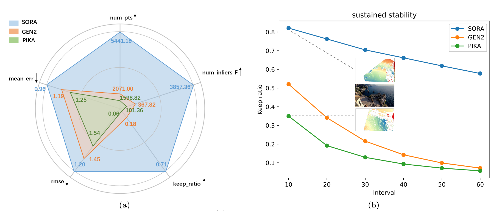
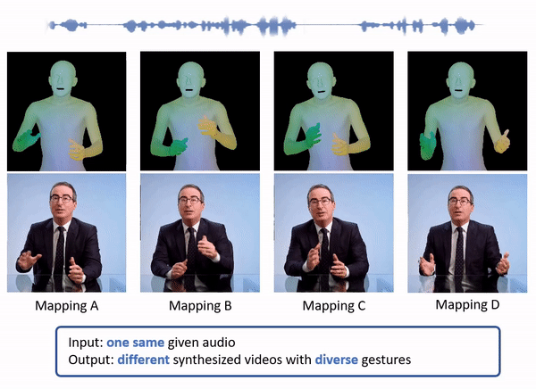
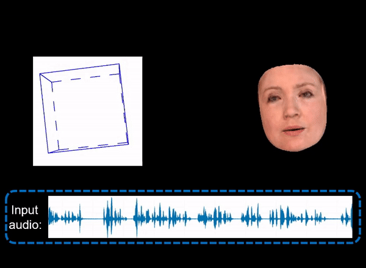
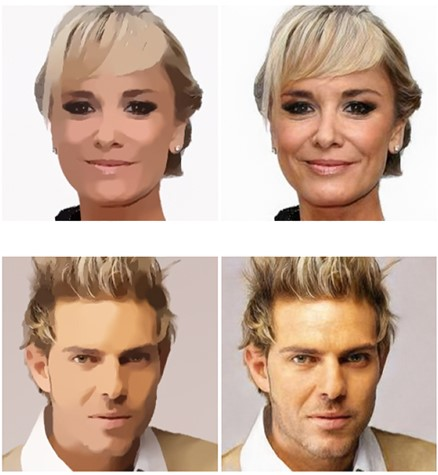
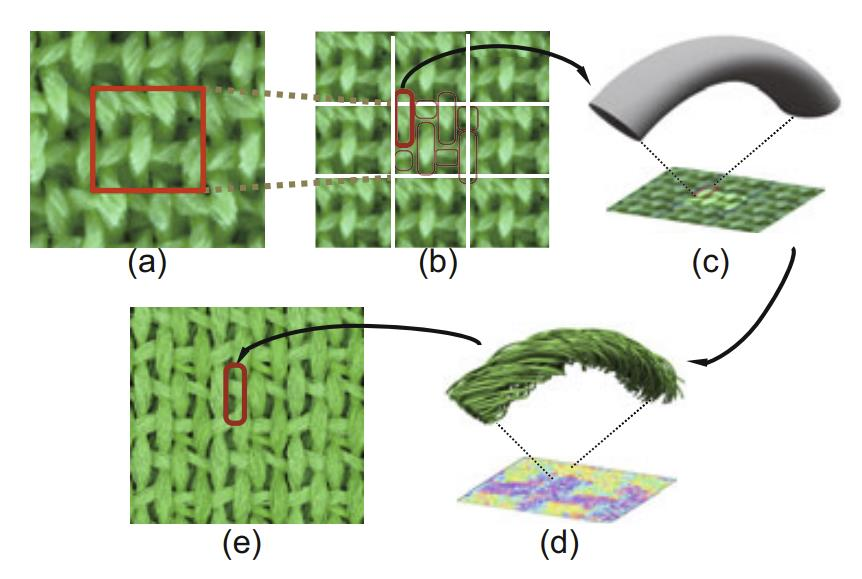
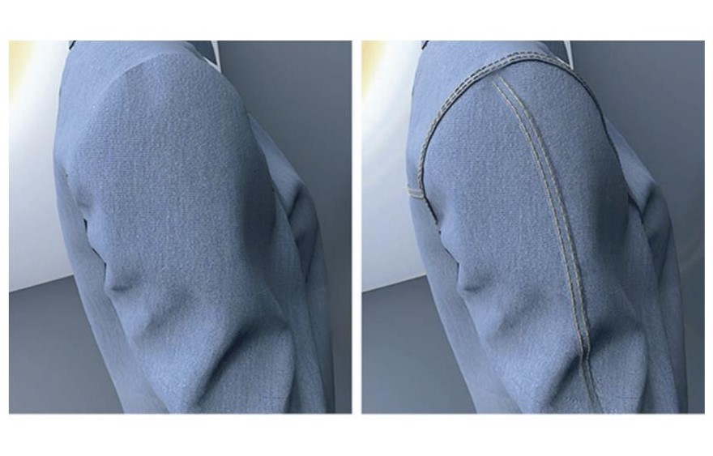

Chenxu Zhang
Research Scientist |
Biography
I am a Research Scientist at the Intelligent Creation Lab, ByteDance. I completed my Ph.D. in Computer Science from the University of Texas at Dallas in 2023, under the supervision of Prof. Xiaohu Guo. Prior to that, I earned my Bachelor's degree in Software Engineering in 2015 and Master's degree in Computer Science in 2018, both from Beihang University in Beijing.
My research interests include Computer Graphics, Computer Vision, and AI, with a focus on Talking Face Generation, Conversational Gestures Synthesis, Deblur-NeRF with Human Motion, Text/Image to 3D, and Emotional Talking Avatar.
Feel free to drop me an email if we share common research interests.
Working Experience
-
Bytedance, CA
Research Scientist (May 2023 – Present) -
The University of Texas at Dallas
Research Assistant (Jan. 2020 – May 2023) -
Bytedance, CA
Research Intern (May 2022 – Aug. 2022)
Research
 |
Di Chang, Hongyi Xu, You Xie, Yipeng Gao, Zhengfei Kuang, Shengqu Cai, Chenxu Zhang, Guoxian Song, Chao Wang, Yichun Shi, Zeyuan Chen, Shijie Zhou, Linjie Luo, Gordon Wetzstein, Mohammad Soleymani. CVPR 2025. [paper] [project page] [code] |
 |
Yuan Li, Cheng Lin, Yuan Liu, Xiaoxiao Long, Chenxu Zhang, Ningna Wang, Xin Li, Wenping Wang, Xiaohu Guo. CVPR 2025. [paper] |
 |
Xiaochen Zhao, Hongyi Xu, Guoxian Song, You Xie, Chenxu Zhang, Xiu Li, Linjie Luo, Jinli Suo, Yebin Liu. ICLR 2025. [paper] [project page] |
 |
Chenxu Zhang, Chao Wang, Jianfeng Zhang, Hongyi Xu, Guoxian Song, You Xie, Linjie Luo, Yapeng Tian, Jiashi Feng, Xiaohu Guo. CVM 2025. [paper] [project page] |
|  | Xuanyi Li, Daquan Zhou, Chenxu Zhang, Shaodong Wei, Qibin Hou, Ming-Ming Cheng. Preprint'2024. [paper] [project page] [code] |
 |
Zhongcong Xu, Jianfeng Zhang, Jun Hao Liew, Hanshu Yan, Jia-Wei Liu, Chenxu Zhang, Jiashi Feng, Mike Zheng Shou. Computer Vision and Pattern Recognition (CVPR), 2024. [paper] [project page] [code] |
|  | Chenxu Zhang, Chao Wang, Yifan Zhao, Shuo Cheng, Linjie Luo, Xiaohu Guo. IEEE/CVF Winter Conference on Applications of Computer Vision (WACV), 2024. [paper] [supplement] [video] |
 |
Fan Yang, Jianfeng Zhang, Yichun Shi, Bowen Chen, Chenxu Zhang, Huichao Zhang, Xiaofeng Yang, Jiashi Feng, Guosheng Lin. Preprint'24. [paper] [project page] [code] |
|
|
Jianfeng Zhang, Xuanmeng Zhang, Huichao Zhang, Jun Hao Liew, Chenxu Zhang, Yi Yang, Jiashi Feng. Preprint'23. [paper] [project page] [code] |
 |
Chenxu Zhang, Yifan Zhao, Yifei Huang, Ming Zeng, Saifeng Ni, Madhukar Budagavi, Xiaohu Guo. International Conference on Computer Vision (ICCV), 2021. [paper] [video] [code] |
|  | Chenxu Zhang, Saifeng Ni, Zhipeng Fan, Hongbo Li, Ming Zeng, Madhukar Budagavi, Xiaohu Guo. IEEE Transactions on Visualization and Computer Graphics (TVCG), 2021. [paper] [video] |
|  | Yifei Huang, Chenhui Li, Xiaohu Guo, Jing Liao, Chenxu Zhang, Changbo Wang. Proceedings of the 28th ACM International Conference on Multimedia (MM), 2020. [paper] [supplement] |
|  | Hongyu Wu, Xiaowu Chen, Chenxu Zhang, Bin Zhou, Qinping Zhao. Frontiers of Information Technology Electronic Engineering, 2019. [paper] |
|  | Chenxu Zhang, Xiaowu Chen, Hongyu Wu, Bin Zhou. Journal of Computer Science and Technology (JCST), 2018. [paper] |
Activities
- Reviewer for Journal: TPAMI, TIP, TMM, etc.
- Reviewer for Conference: CVPR, ICCV, ECCV, AAAI, MM, PG, WACV, etc.